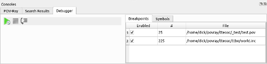

qtpovraySDL Debugger | March 26, 2020 |

{kind=link}
qtpovray contains a simple SDL debugger. With it, you can:
- Set breakpoints
- Step through your code line by line.
- Examine the values of some types of variables.
- floats
- vectors
- colors
- arrays
Theory of Operation
To use the debugger, instead of starting your render with Ctrl-R or the Render button in the toolbar,
the render is started using the green arrow plus gear icon in the debugger console.
The POV-Ray parser operates on a single word, or token, at a time. The debugger operates on lines.
As each token is evaluated, the debugger checks the line number of token.
If it is different than the last token, then the list of breakpoints is checked for a match.
If this is a breakpoint line, then the parser is paused and control is given to the debugger.
When the debugger gains control, any symbols in the symbol window are updated with their current values.
Then the user's choices are:
- Change the symbols displayed in the Symbol list.
- Step to the next line of your code.
- Resume parsing.
Single Stepping
Click the step button or press F10 to step to the next line.
The next line may not be the line immediately following the current line.
If you are stopped at an #include line, the debugger will step into the include.
If the current line contains a macro, the debugger will step into the macro.
Symbol Display
{kind=link}
The debugger can display the values of symbols.
To add a symbol to the displayed list, type its name into the text box below the list.
To remove a symbol from the displayed list, select it in the list and press the Delete key.
Breakpoints
 Breakpoints are used to control execution of the parser.
Breakpoints are used to control execution of the parser.
To set a breakpoint, position the cursor anywhere on the line you want to stop at.
Press F9 to toggle a breakpoint on the current line.
You can remove a breakpoint by either toggling it off in the SDL code (as stated above)
or right-click menu -> Remove breakpoint on the breakpoint in the breakpoints list in the debugger console.